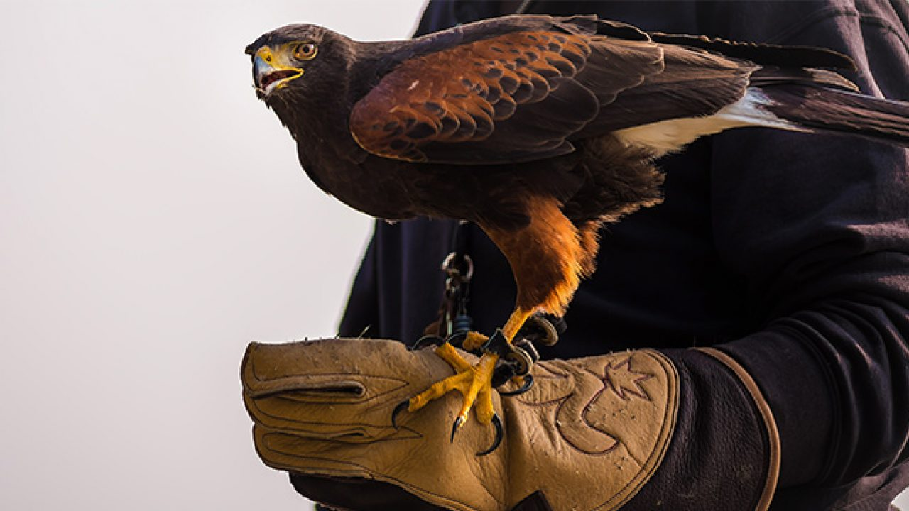

Cetrería
CETRERÍA

La cetrería es la actividad de cazar con aves rapaces, especialmente con halcones,
azores y otras aves de presa para la captura de especies de volatería o de tierra.
Biológicamente se trata de una simbiosis entre hombre y animal, una relación en la que
ambas especies se benefician. Uno de sus mayores expertos mundiales, Félix Rodríguez de
la Fuente, la definió como «la primera vez en que el hombre no sometió al animal al yugo y
al látigo». El humano captura y liga al ave de presa al propio hombre, por reflejos
condicionados, y la entrena en la caza y en la fidelidad. Su pájaro captura entonces otras aves o
cualquier otro tipo de presa, generalmente cuadrúpedos pequeños o medianos (conejos, liebres).
La cetrería fue una práctica muy extendida en la Edad Media, ligada a la nobleza y a los potentados.
Acabó decayendo por el progreso de las armas de fuego y la mayor vistosidad y festividad que se podía
ofrecer con las partidas de caza mayor, especialmente la montería. El 16 de noviembre de 2010, la Unesco la
declaró Patrimonio Cultural Inmaterial de la Humanidad, en una candidatura multinacional de Arabia Saudita,
Bélgica, República Checa, Corea del Sur, Emiratos Árabes Unidos, España, Francia, Marruecos, Mongolia,
Catar y Siria. El 6 de diciembre de 2012, se unieron a esta candidatura Austria y Hungría.